Java的解释
Java来自于Sun公司的一个叫Green的项目，Java是一门面向对象的编程语言
JVM
即在机器和编译程序之间加入了一层抽象的虚拟的机器。这台虚拟的机器在任何平台上都提供给编译程序一个共同的接口。
编译程序只需要面向虚拟机，生成虚拟机能够理解的代码，然后由解释器来将虚拟机代码转换为系统的机器码执行。
在java中，这种供虚拟机理解的代码叫做字节码（ByteCode），它不面向任何特定的处理器，只面向虚拟机。

程序运行的起始点---main() method
java程序是由一个或一个以上的类组合而成的，程序起始的主体也在被包含在类中。这个起始的地方称为main()。
main()方法为程序的主方法，在一个java程序中有且只能有一个main()方法
常量
常量就是固定不变的量，一旦被定义，它的值就不能再被改变。
声明常量的语法为：final 数据类型 常量名[=值]
常量名称通常使用大写字母，列入PI、YEAR等，但并不是硬性要求
声明常量的语法为：final 数据类型 常量名[=值]
常量名称通常使用大写字母，列入PI、YEAR等，但并不是硬性要求
变量是利用声明的方式，将内存中的某个块保留下来以供程序使用。
数据类型


char与byte的区别：
byte 是字节数据类型，是有符号型的，占1 个字节；大小范围为-128—127。
char 是字符数据类型，是无符号型的，占2字节(Unicode码 ）；大小范围是0—65535
1、char是无符号型的，可以表示一个整数，不能表示负数；而byte是有符号型的，可以表示-128—127的数
2、char可以表中文字符，byte不可以
3、char、byte、int对于英文字符，可以相互转化
byte 是字节数据类型，是有符号型的，占1 个字节；大小范围为-128—127。
char 是字符数据类型，是无符号型的，占2字节(Unicode码 ）；大小范围是0—65535
1、char是无符号型的，可以表示一个整数，不能表示负数；而byte是有符号型的，可以表示-128—127的数
2、char可以表中文字符，byte不可以
3、char、byte、int对于英文字符，可以相互转化
强制类型转换
强制类型语法转换：（欲转换的数据类型）变量名称
数组
一维数组写法：数据类型 数组名[ ] = new 数据类型[个数]
int score[] = new int[11];声明一个元素个数为11的整型数组score
二维数组写法：数据类型 数据名[ ][ ] = new 数据类型[行的个数][列的个数]
int score[] = new int[11];声明一个元素个数为11的整型数组score
二维数组写法：数据类型 数据名[ ][ ] = new 数据类型[行的个数][列的个数]
对象
声明对象：类名 对象名 = new 类名();
Person p = new Person();
Person p = new Person();
对象的比较：有两种方式：
“==”运算符与 equals()方法。“==”运算符用于比较两个对象的内存地址是否相等， equals()方法用于比较两个对象的内容是否一致。
类的属性
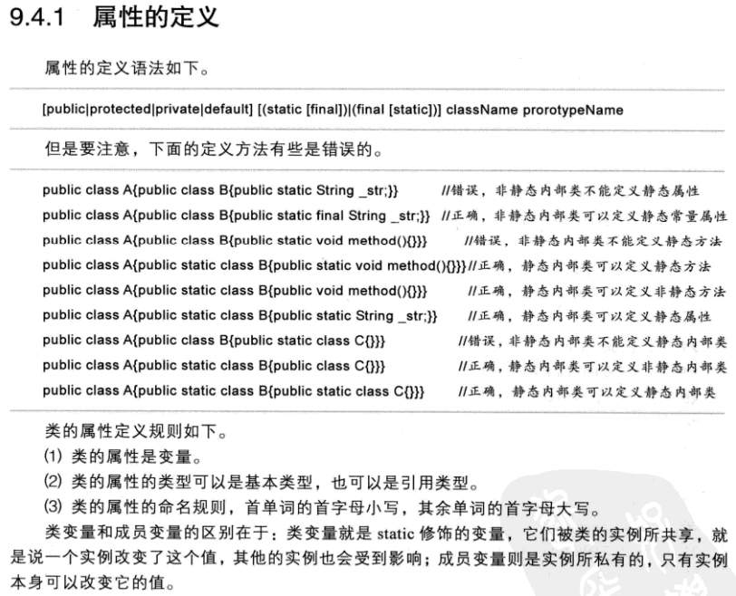
类的方法
type name(参数列表){
//方法主体
}
type指定了由方法返回的数据类型。它可以是任意有效的类型，包括创建的类类型。如果方法没有返回值，则其返回类型必须是void。 方法的名字由name指定，这个名字可以是除了那些在当前作用域中已经使用的标识符之外的任意合法标识符。参数列表是由类型、标识符对 组成的序列，每个之间用逗号分开。参数实际上是方法被调用时接收传递过来的变量。如果方法没有参数，那么参数表是空的。
type name(参数列表){
//方法主体
}
type指定了由方法返回的数据类型。它可以是任意有效的类型，包括创建的类类型。如果方法没有返回值，则其返回类型必须是void。 方法的名字由name指定，这个名字可以是除了那些在当前作用域中已经使用的标识符之外的任意合法标识符。参数列表是由类型、标识符对 组成的序列，每个之间用逗号分开。参数实际上是方法被调用时接收传递过来的变量。如果方法没有参数，那么参数表是空的。
构造方法
在java程序里，构造方法所完成的主要工作是帮助新创建的对象赋初值。可将构造方法视为一种特殊的方法，它的定义方式与普通方法类似
注意：
（1）它具有与类名相同的名称
（2）他没有返回值。
（3）一般方法是在需要时才调用，而构造方法则是在创建对象时自动调用，并执行构造方法的内容
基于上述构造方法的特性，可以用来对对象的数据成员做初始化赋值。
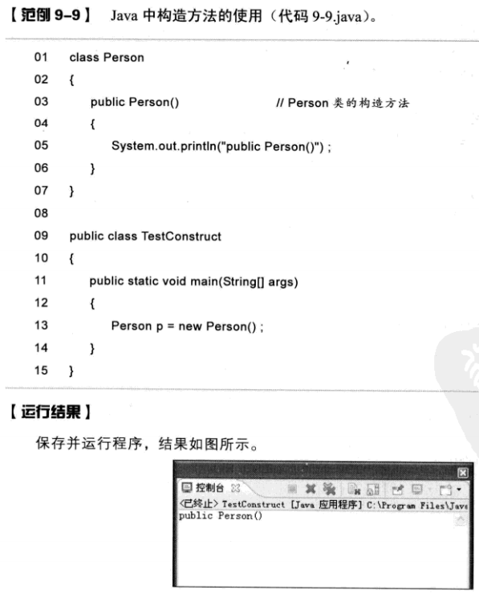
在java程序里，构造方法所完成的主要工作是帮助新创建的对象赋初值。可将构造方法视为一种特殊的方法，它的定义方式与普通方法类似
注意：
（1）它具有与类名相同的名称
（2）他没有返回值。
（3）一般方法是在需要时才调用，而构造方法则是在创建对象时自动调用，并执行构造方法的内容
基于上述构造方法的特性，可以用来对对象的数据成员做初始化赋值。
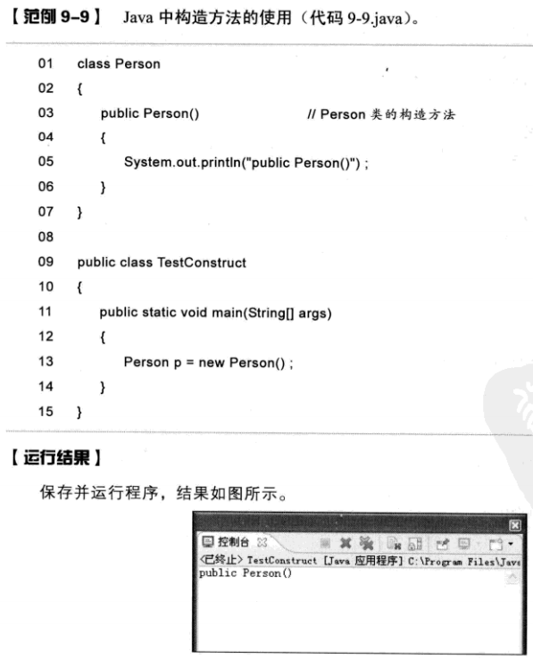
构造方法的重载
在java里，不仅普通方法可以重载，构造方法也可以重载。只要构造方法的参数个数不同，或是类型不同，便可定义多个名称 相同的构造方法。这种做法在java中是常见的
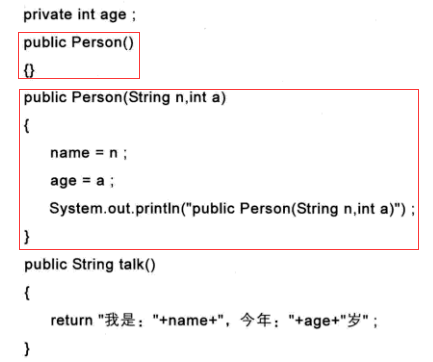
构造方法的私有
方法以实际需要，可分为public和private。同样，构造方法也分为public和private之分。所有的构造方法均属于public，它可以 在程序的任何地方被调用。如果构造方法被设置为private，则无法在构造方法所在的类以外的地方被调用。
在java里，不仅普通方法可以重载，构造方法也可以重载。只要构造方法的参数个数不同，或是类型不同，便可定义多个名称 相同的构造方法。这种做法在java中是常见的
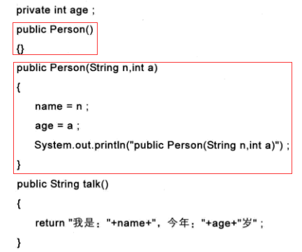
构造方法的私有
方法以实际需要，可分为public和private。同样，构造方法也分为public和private之分。所有的构造方法均属于public，它可以 在程序的任何地方被调用。如果构造方法被设置为private，则无法在构造方法所在的类以外的地方被调用。
类的继承
在java中，通过继承可以简化类的定义，扩展类的功能。在java中支持类的继承和多层继承，但是不支持多继承，即 一个类只能继承一个类而不能继承多个类。
class 子类名 extends 父类
java继承只能直接继承父类中的公有属性和公有方法，隐含地继承了私有属性。
子类对象在实例化时会默认先去调用父类中的无参构造方法，之后再调用本类中相应构造方法
在java中，通过继承可以简化类的定义，扩展类的功能。在java中支持类的继承和多层继承，但是不支持多继承，即 一个类只能继承一个类而不能继承多个类。
class 子类名 extends 父类
java继承只能直接继承父类中的公有属性和公有方法，隐含地继承了私有属性。
子类对象在实例化时会默认先去调用父类中的无参构造方法，之后再调用本类中相应构造方法
super关键字的作用
super主要的功能是完成子类调用父类中的内容，也就是调用父类中的属性和方法。
用super调用父类中的构造方法，只能放在程序的第一行
super关键字不仅可用于父类中的构造方法，也可用于调用父类中的属性和方法
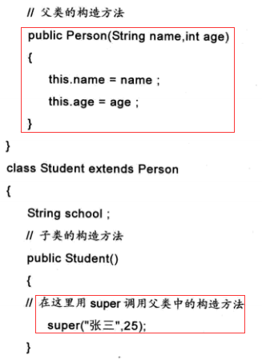
super主要的功能是完成子类调用父类中的内容，也就是调用父类中的属性和方法。
用super调用父类中的构造方法，只能放在程序的第一行
super关键字不仅可用于父类中的构造方法，也可用于调用父类中的属性和方法
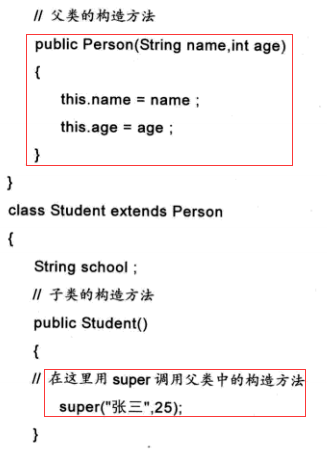
覆写
“覆写”的概念和“重载”相似，它们均是java“多态”的技术之一。所谓“重载”，即是方法名称相同，但却在不同场合下做不同的事。 当一个子类继承一个父类，而子类中的方法与父类中的方法的名称、参数个数、类型等都完全一致时，就称子类中的这个方法覆写了 父类中的方法。同理，如果子类中重复定义了父类中已有的属性，则称此子类中的属性覆写了父类中的属性。
“覆写”的概念和“重载”相似，它们均是java“多态”的技术之一。所谓“重载”，即是方法名称相同，但却在不同场合下做不同的事。 当一个子类继承一个父类，而子类中的方法与父类中的方法的名称、参数个数、类型等都完全一致时，就称子类中的这个方法覆写了 父类中的方法。同理，如果子类中重复定义了父类中已有的属性，则称此子类中的属性覆写了父类中的属性。
类得多态
1.向上转型
在上面的示例中，父类对象通过子类对象去实例化，实际上就是对象的向上转型。向上转型是不需要进行强制类型转换的，但是向上转型会丢失精度。
2.向下转型
父类对象可以转为子类对象，但这是必须要进行强制类型转换
1.向上转型
在上面的示例中，父类对象通过子类对象去实例化，实际上就是对象的向上转型。向上转型是不需要进行强制类型转换的，但是向上转型会丢失精度。
2.向下转型
父类对象可以转为子类对象，但这是必须要进行强制类型转换
抽象类
在java中可以创建一种类专门用来当作做父类，这种类称为“抽象类”。抽象类实际上也是一个类，只是与之前的普通类相比，
其中多了抽象方法。抽象方法是只声明而未实现的方法，所有的抽象方法必须使用abstract关键字声明，包含抽象方法的类
也必须使用abstract class 声明
抽象类定义规则如下：
（1）抽象类和抽象方法都必须用abstract关键字来修饰。
（2）抽象类不能被直接实例化，也就是不能直接用new关键字去产生对象。
（3）抽象方法只需声明，而不能实现。
（4）含有抽象方法的类必须被声明为抽象类，抽象类的子类必须覆写所有的抽象方法后才能被实例化，否则这个子类还是抽象类。
与一般类相同，在抽象类中也可以拥有构造方法，但是这些构造方法必须在子类中被调用。
从程序中可以看到，抽象类也可以像普通类一样，有构造方法、一般方法和属性，更重要的是可以有一些抽象方法，留给子类去实现，而且在抽象类中声明 构造方法后，在子类中必须明确调用。
抽象类定义规则如下：
（1）抽象类和抽象方法都必须用abstract关键字来修饰。
（2）抽象类不能被直接实例化，也就是不能直接用new关键字去产生对象。
（3）抽象方法只需声明，而不能实现。
（4）含有抽象方法的类必须被声明为抽象类，抽象类的子类必须覆写所有的抽象方法后才能被实例化，否则这个子类还是抽象类。
与一般类相同，在抽象类中也可以拥有构造方法，但是这些构造方法必须在子类中被调用。
从程序中可以看到，抽象类也可以像普通类一样，有构造方法、一般方法和属性，更重要的是可以有一些抽象方法，留给子类去实现，而且在抽象类中声明 构造方法后，在子类中必须明确调用。
接口
接口是（interface）java所提供的另一种重要技术，它是结构和抽象类非常相似，也具有数据成员与抽象方法，
但它与抽象类又有以下两点不同。
（1）接口里的数据成员必须初始化，且数据成员均为常量。
（2）接口里的方法必须全部声明为abstract，也就是说，接口不能像抽象类一样保有一般方法， 必须全部是“抽象方法”。
接口的语法
interface 接口名称{
final 数据类型 成员名称 = 常量;
abstract 返回值的数据类型 方法名称(参数......);
//抽象方法，注意在抽象方法里没有定义方法主体
}
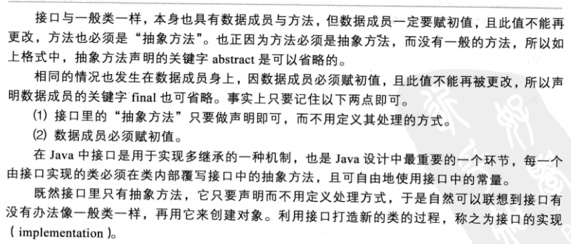
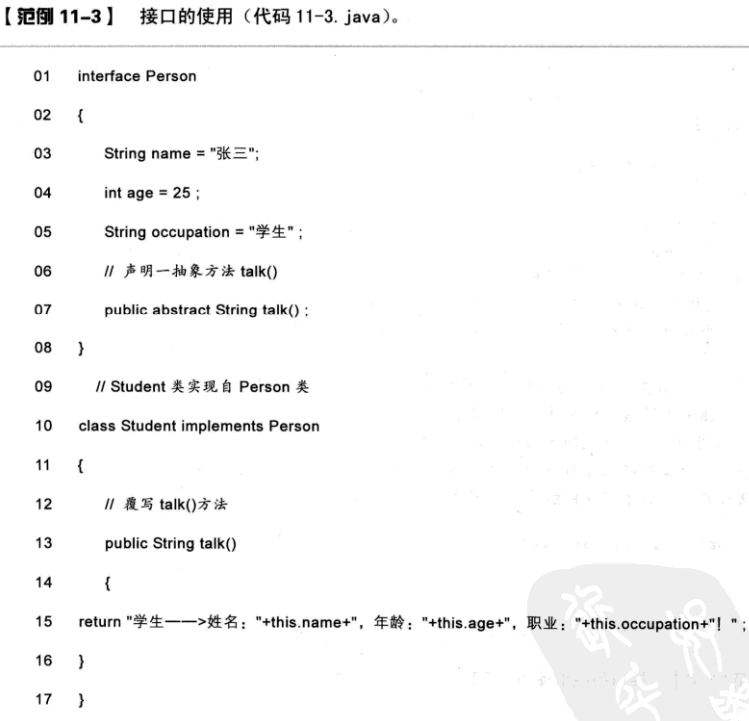
接口是java实现多继承的一种机制，一个类只能继承一个父类，但如果需要一个类继承多个抽象方法，就无法实现。 所以出现了接口的概念。一个类可以实现多个接口。接口与一般类一样，均可通过扩展的技术派生出新的接口。原来 的接口称为基本接口或父接口，派生出的接口称为派生接口或子接口。
（1）接口里的数据成员必须初始化，且数据成员均为常量。
（2）接口里的方法必须全部声明为abstract，也就是说，接口不能像抽象类一样保有一般方法， 必须全部是“抽象方法”。
接口的语法
interface 接口名称{
final 数据类型 成员名称 = 常量;
abstract 返回值的数据类型 方法名称(参数......);
//抽象方法，注意在抽象方法里没有定义方法主体
}
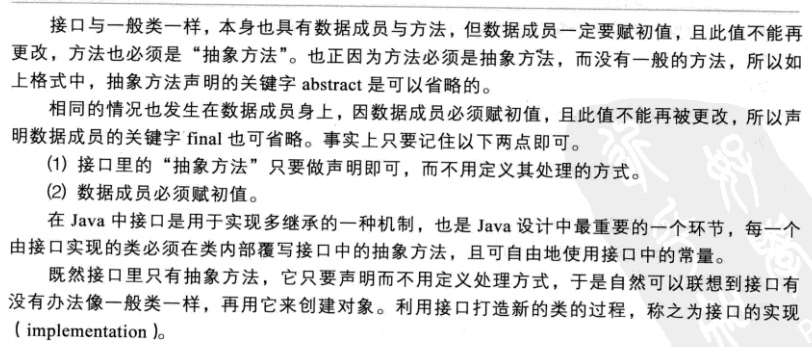
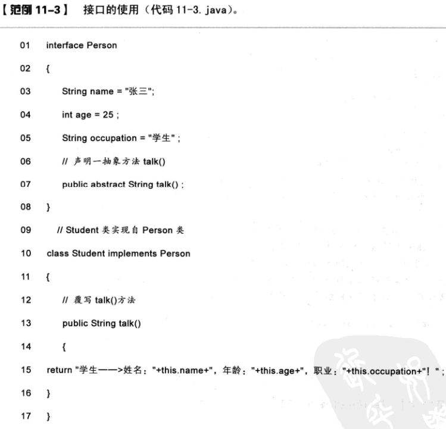
接口是java实现多继承的一种机制，一个类只能继承一个父类，但如果需要一个类继承多个抽象方法，就无法实现。 所以出现了接口的概念。一个类可以实现多个接口。接口与一般类一样，均可通过扩展的技术派生出新的接口。原来 的接口称为基本接口或父接口，派生出的接口称为派生接口或子接口。
Object类
java中有一个比较特殊的类，就是Object类，它是所有类的父类。如果一个类没有使用extends关键字明确
标识继承另外一个类，那么这个类就是默认继承Object类。因此，Object类是java类层中的最高层类，是所有类的超类。
换句话说，java中任何一个类都是它的子类。由于所有的类都是由Object类衍生出来的，所有Object类中的方法
适用于所有类。
由编译结果可以看到，由于内部类Inner声明为static类型，所以无法访问外部类中的非static类型属性score
匿名内部类：程序实现了接口A中的fun1()方法，并把整个的一个实现类传递到了方法get()中，这就是 所谓的匿名内部类，它不用声明实质上的类就可以使用。
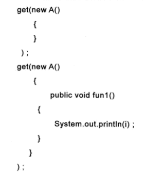
由编译结果可以看到，由于内部类Inner声明为static类型，所以无法访问外部类中的非static类型属性score
匿名内部类：程序实现了接口A中的fun1()方法，并把整个的一个实现类传递到了方法get()中，这就是 所谓的匿名内部类，它不用声明实质上的类就可以使用。
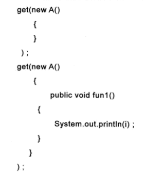
方法的重载：
方法的重载就是在统一类中允许同时存在一个以上的同名方法，只要他们的参数或类型不同即可。在这种情况下， 该方法就被叫做重载了，这个过程称为是方法的重载。
从程序中可以看到，两个对象的内容是完全相等，但为什么比较的结果是不相等呢，这是因为p1和p2的内容分别在不同的 内存空间，指向了不同的内存地址，所以比较时调用了Object类中的equals方法。但看到此方法并不好用，所以在开发中 往往需要覆写equals方法。
方法的重载就是在统一类中允许同时存在一个以上的同名方法，只要他们的参数或类型不同即可。在这种情况下， 该方法就被叫做重载了，这个过程称为是方法的重载。
从程序中可以看到，两个对象的内容是完全相等，但为什么比较的结果是不相等呢，这是因为p1和p2的内容分别在不同的 内存空间，指向了不同的内存地址，所以比较时调用了Object类中的equals方法。但看到此方法并不好用，所以在开发中 往往需要覆写equals方法。
接口的实例化：接口是无法直接实例化的，因为接口中没有构造方法。到那时却可以根据对象多态的概念，
通过接口的子类对其进行实例化。
this关键字的使用
this强调对象本身，this表示当前对象，而所谓的当前对象就是指调用类中方法或属性的那个对象。
this强调对象本身，this表示当前对象，而所谓的当前对象就是指调用类中方法或属性的那个对象。
static关键字的使用 之 静态变量
在java中，可以使用static关键字声明静态变量和方法。所以在java中提供了static关键字，用它来修饰类的属性后，则 此属性就是公共属性了。用static声明的属性是所有对象共享的。用static方式声明的属性，也可以用类名直接访问。 用static类型声明的变量称之为“类变量”
在java中，可以使用static关键字声明静态变量和方法。所以在java中提供了static关键字，用它来修饰类的属性后，则 此属性就是公共属性了。用static声明的属性是所有对象共享的。用static方式声明的属性，也可以用类名直接访问。 用static类型声明的变量称之为“类变量”
static关键字的使用 之 静态方法
用static声明的方法称为“类方法”。注意：在使用static类型声明的方法时，如果在类中声明一个static类型的属性， 则此属性既可以在非static类型的方法中使用，也可以在static类型的方法中使用。但若要用static类型的方法调用 非static类型的属性时，就会出现错误。
用static声明的方法称为“类方法”。注意：在使用static类型声明的方法时，如果在类中声明一个static类型的属性， 则此属性既可以在非static类型的方法中使用，也可以在static类型的方法中使用。但若要用static类型的方法调用 非static类型的属性时，就会出现错误。
main()方法
由于java虚拟机需要调用类的main()方法，所以该方法的访问权限必须是public，又因为java虚拟机在执行main()方法 时不必创建对象，所以该方法必须时static的，该方法接收一个String类型的参数，该数组中保存执行java命令时传递给 所运行的类的参数。
由于java虚拟机需要调用类的main()方法，所以该方法的访问权限必须是public，又因为java虚拟机在执行main()方法 时不必创建对象，所以该方法必须时static的，该方法接收一个String类型的参数，该数组中保存执行java命令时传递给 所运行的类的参数。